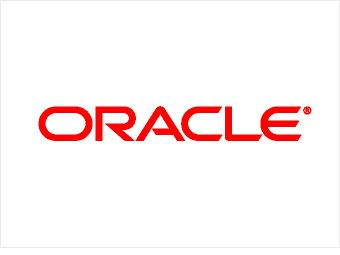

<div class="experience">   
   <h2>WORK EXPERIENCE</h2>
   <div class="exp-container">
        
        <div class = "content"> 
            <p> July 2018 - June 2021 </p>
            <p> Location : Hyderabad, India </p>
            <p> Contributions: </p>
            <ul>
                <li>Developed an application which manages the employee life cycle events and the activities that occur between onboarding and off boarding in the organization. </li>
                <li>Developed various features in the Oracle Human Capital Management application and resolved bugs for 8 release cycles.</li>
                <li>Automated actions using Event-driven Service Oriented architecture.</li>
                <li>Developed notification service which sends emails, reminders and application notifications to the users</li>
                <li>Developed Data Models to create templates that are used in the notification service of the application.</li>
                <li>Integrated Oracle Fusion HCM application with third-party service provider ‘DocuSign’ and ‘HireRight’ to approve and sign documents faster and verify employment eligibility respectively.</li>
            </ul>
        </div>
    </div>
</div>>
 